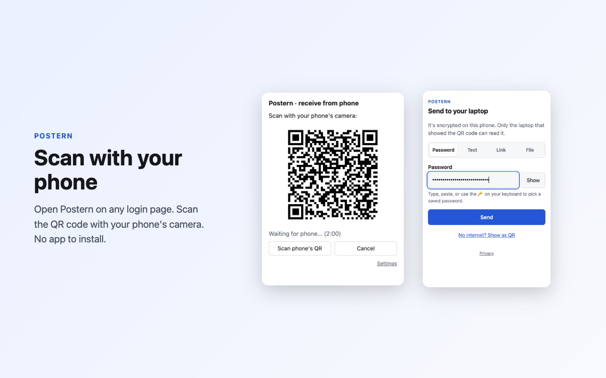
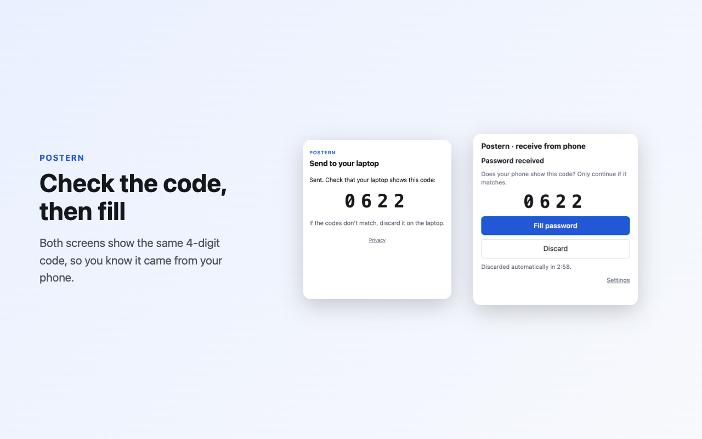
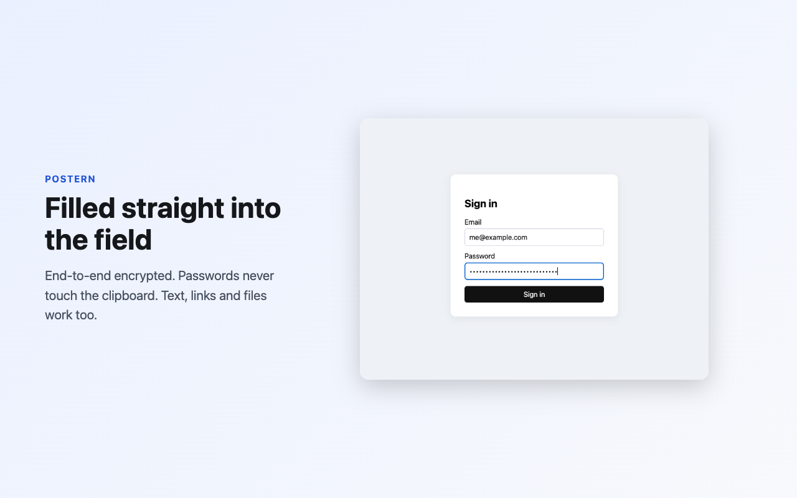

Postern · Blog
Why we built Postern: a private gate from your phone to your browser
Your password is on your phone. The login form is on your laptop. Somewhere between the two, you end up squinting at 24 random characters and typing them one at a time. We built Postern to make that one small moment private and quick.
The problem we kept running into
Password managers are great when they're installed everywhere. But often they aren't:
- A work laptop where you can't install your password manager.
- A new computer, before anything is set up.
- A shared or borrowed machine, where you don't want to sign in to your whole vault.
- A Wi-Fi password, an API key or a long recovery code that lives in a note on your phone.
The usual workarounds all have a cost. Typing by hand is slow, and a strong password is exactly the kind you mistype. Emailing or messaging it to yourself can leave a copy on someone else's server for a long time. Clipboard sync usually works only between one company's devices, and what's on the clipboard can often be read by other apps.
We wanted something that works with any phone and any browser, leaves nothing behind, and doesn't ask anyone to trust us with what they send.
How it works

- Open Postern on your laptop. Click the toolbar icon, right-click the field, or press Alt+Shift+P. It shows a QR code.
- Scan it with your phone's camera. It opens a web page. There's no app to install and no account to create.
- Type or paste on the phone and press Send. It's encrypted on the phone before it goes anywhere.
- Check the code. Both screens show the same 4-digit number. If they match, click Fill and the password goes straight into the field.

Postern sends more than passwords: text like user IDs and codes, links that you can open, fill or copy, and small files up to 256 KB, such as a JSON config. And the browser extension never puts a password on the clipboard. It goes into the field you chose and nowhere else.
What makes it private
The design starts from one rule: our server should be unable to read anything, even if it wanted to.
- A one-time key that never reaches us. When you open Postern, your browser makes a fresh key pair. The public key travels in the QR code, after the
#in the link. Browsers never send that part of a link to a server, so the key goes straight from your screen to your phone's camera. - Standard, well-reviewed encryption. The phone encrypts with HPKE (RFC 9180), using X25519, HKDF-SHA256 and AES-256-GCM. Our implementation is tested against the official RFC 9180 test vectors.
- A relay that only passes things on. The server holds the encrypted message in memory until your browser collects it, then deletes it. The message is never written to disk, and unclaimed messages are gone after 2 minutes.
- A check against a photographed QR code. If someone takes a picture of your screen, they could try to send something of their own first. The 4-digit code is derived from the encryption of that one message, so a message from anyone else shows a different code, except by a 1 in 10,000 chance. Only fill when the codes match.
- No accounts, no analytics, no tracking. There's nothing to sign up for. Your IP address is used only to limit how many requests one address can make per minute, and it isn't logged. Our privacy policy has the details.
What Postern doesn't protect against
No tool protects against everything, and we'd rather say so up front:
- A compromised device. If your phone or laptop has malware on it, that malware can see what you type, with or without Postern.
- Someone watching your screen while you type on the phone.
- Fake websites. Postern fills the field you chose. Unlike a password manager, it doesn't check that the site is the real one. Look at the address bar before you fill a password, as you would when typing it.
- Skipping the code check. The 4-digit code only helps if you compare it.

Open source, from the protocol up
Postern is open source under the Apache 2.0 license. You can read every line of the extension, the phone page and the relay, and the protocol is documented in full with test vectors, so anyone can build a compatible client.
If you'd rather not depend on our server at all, the relay runs on your own machine with Docker. And if you build websites or apps, the @dahp/postern npm package adds a "From phone" button to any field, so your own users can send passwords and files from their phone the same way.
Found a security problem? Please tell us privately at info@dahp.io rather than in a public issue. Our security policy explains how we handle reports.
Try it
The Postern extension is available from the Chrome Web Store, for Chrome, Edge and most other Chromium-based browsers. Versions for Firefox and Safari are on the way. In the meantime, the web receiver works in any browser with nothing to install. It can't fill fields, so it offers Copy instead.
We'd love to hear how you use it, and what would make it better. Write to info@dahp.io or open an issue on GitHub.
Chrome and Chrome Web Store are trademarks of Google LLC, Edge of Microsoft Corporation, Firefox of the Mozilla Foundation, and Safari of Apple Inc. Postern is not affiliated with or endorsed by them.